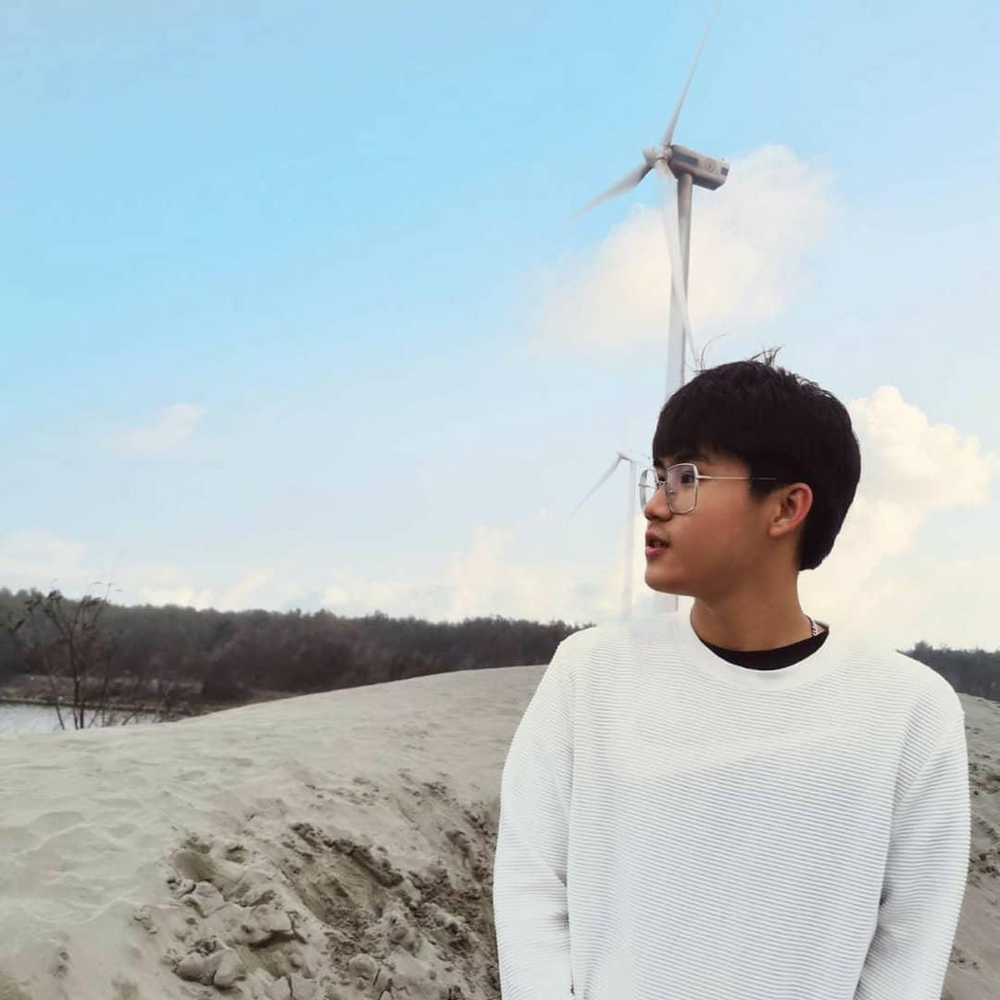

林晁磊
National Taipei University of Education MIE
大家好，我是一個個性活潑、外向、且開朗的人，喜歡和人交朋友。我的興趣非常廣泛，從打籃球、彈鋼琴和唱歌到旅遊和探索不同的文化和風景都深受我喜愛。我相信這些興趣和經驗塑造了我獨特的人格和對生活的熱情。
目前，我就讀於台北教育大學數資系，這是一個非常有挑戰性的學習環境，讓我可以不斷挑戰自己並且成長進步。這個專業讓我接觸到了許多計算機和數據分析方面的技能，也讓我開始了解到技術與社會的關聯性。我希望能夠在未來的事業中運用這些學習和經驗，為社會和他人做出實質性的貢獻。
在我的興趣方面，籃球是我的最愛，。打籃球不僅是一種健康的運動方式，也可以讓我發揮團隊精神並且增強協作能力。另外，我也非常熱愛音樂，彈鋼琴和唱歌是我娛樂和表達情感的方式。在表演方面，我喜愛抒情歌曲，這種表演風格需要具有情感和說服力，也是一種很好的溝通能力。在我就讀高中時，我曾經有機會在學校的舞台上演唱過，這讓我更加自信並且鍛煉了我的公眾演講能力。

興趣

籃球
鋼琴

唱歌
Contact
- 連絡電話0920075052
- Email joshclin0930@gmail.com
- Facebook 林晁磊
- Instagram opjosh.mm